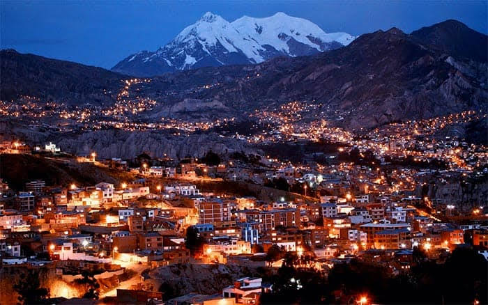

Diane Steffy Chambi Gutierrez
About Me
Hi! My name is Diane Steffy Chambi Gutierrez. I am Industrial Engineering recent graduated, and studying Web Programming at byu-Idaho online.
Santa Cruz, Bolivia

Bolivia is a country in South America known for its cultural diversity, beautiful landscapes, and rich traditions.